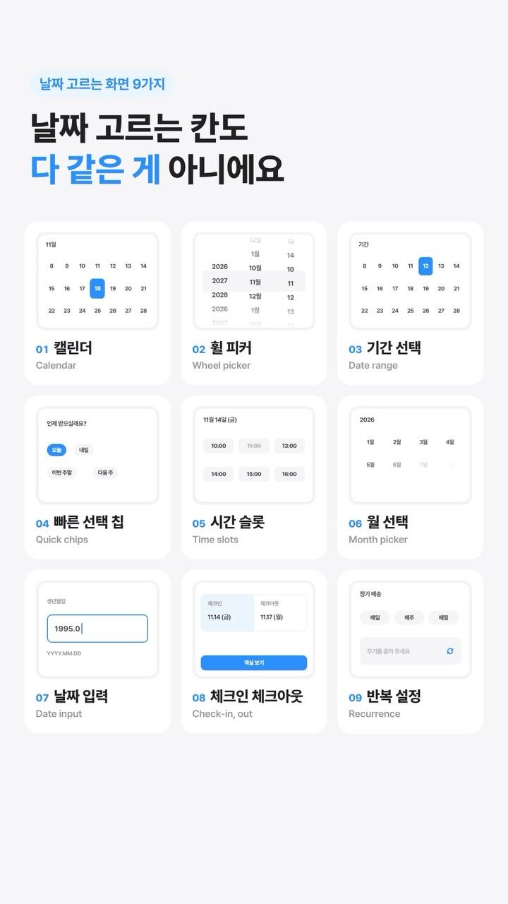

테크 · 릴스 · 2026-11-23
날짜 고르는 UI 9가지와 이름으로 AI에 요청하기
날짜 입력 UI는 달력 외에도 휠 피커, 빠른 선택 칩, 체크인 체크아웃 등 여러 종류가 있으니 AI에게는 정확한 UI 이름으로 요청하는 것이 좋다는 팁이다.

- AI에게 날짜칸을 만들어 달라고 하면 대부분 달력만 나온다.
- 날짜 고르는 화면은 캘린더, 휠 피커, 기간 선택, 빠른 선택 칩, 시간 슬롯, 월 선택, 날짜 입력, 체크인 체크아웃, 반복 설정 등 9가지로 나눌 수 있다.
- 돌돌 굴려서 값을 맞추는 방식은 휠 피커라고 부른다.
- 오늘, 내일처럼 버튼 하나로 날짜를 고르는 방식은 빠른 선택 칩이다.
- 숙소 예약처럼 들어가는 날과 나오는 날을 따로 고르는 방식은 체크인 체크아웃이다.
- AI에게는 '달력'이 아니라 구체적인 UI 이름으로 요청하는 것이 좋다.
- 작성자는 UI 이름 90개를 모은 UI 사전을 프로필 링크에서 무료로 배포한다.